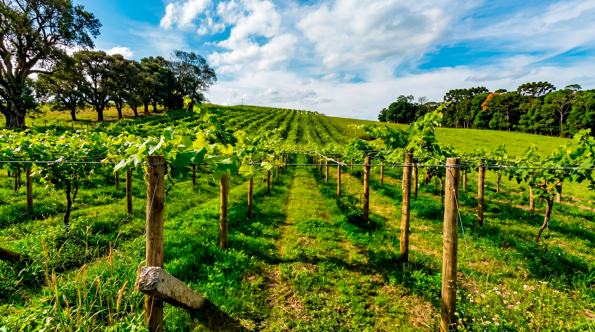

Vales da Uva Goethe · 1a D.O. de SC
Denominação de Origem
Primeira D.O. de vinhos de Santa Catarina, terceira do Brasil. Quarezemin é parte fundante deste território.
12 rótulos · IP Vales da Uva Goethe

Das regiões de Toscana e Vêneto ao Sul Catarinense, a família Quarezemin cultiva a arte do vinho desde 2002. Uvas selecionadas, colhidas manualmente, envelhecidas em cantina de pedra. O resultado é um vinho que carrega a alma do lugar.
Nossa HistóriaA importância do lugar
Entre as encostas da Serra Geral e o litoral catarinense, nasce um vinho que o mundo reconhece.
Nossos vinhos vêm de Içara, Santa Catarina — coração da Denominação de Origem Vales da Uva Goethe, primeira D.O. de vinhos do estado e única região no mundo a cultivar a uva Goethe sob Indicação Geográfica certificada. Mãos experientes apostam na poda e vindima manuais, revelando o caráter único do nosso terroir italiano em solo catarinense.
2012 · 2024 · 2025 · Reconhecimentos
Medalhas, indicações de procedência e a Denominação de Origem que coroa duas décadas de cantina em pedra.
Vales da Uva Goethe · 1a D.O. de SC
Primeira D.O. de vinhos de Santa Catarina, terceira do Brasil. Quarezemin é parte fundante deste território.
Concurso Brasileiro de Vinhos de Mesa
Rosé Goethe avaliado às cegas entre mais de 170 rótulos nacionais — Demi-sec premiado, fácil de amar, impossível de esquecer.
INPI · Indicação de Procedência
Primeira IP de Santa Catarina. Identidade e origem certificadas para o vinho regional do Sul Catarinense.
Rod. SC-445 · Km 66 · Içara/SC
Venha conhecer os parreirais, a cantina histórica em pedra e os vinhos artesanais. Para grupos privados, eventos ou degustações, seleciona ao lado.